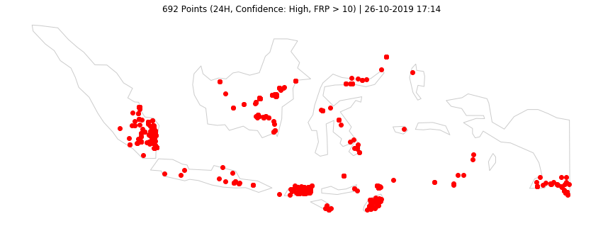
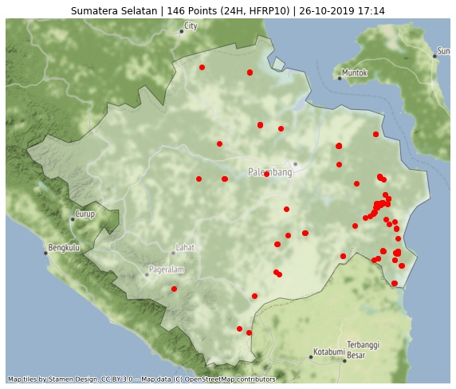
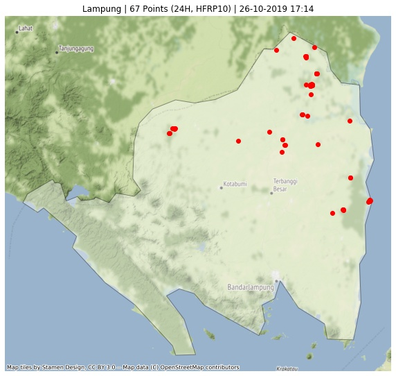
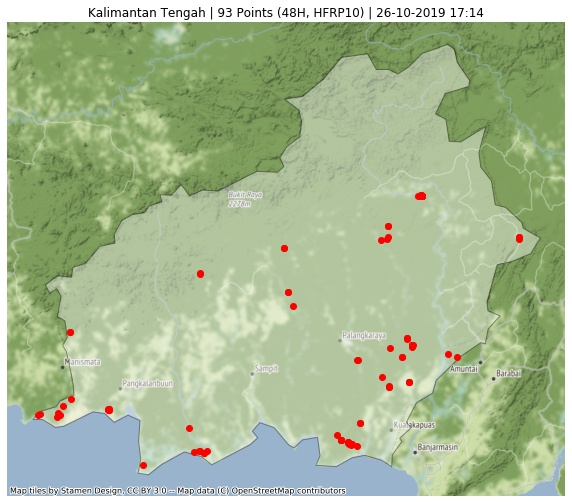
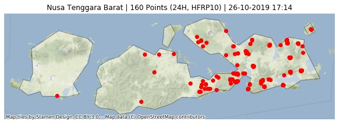
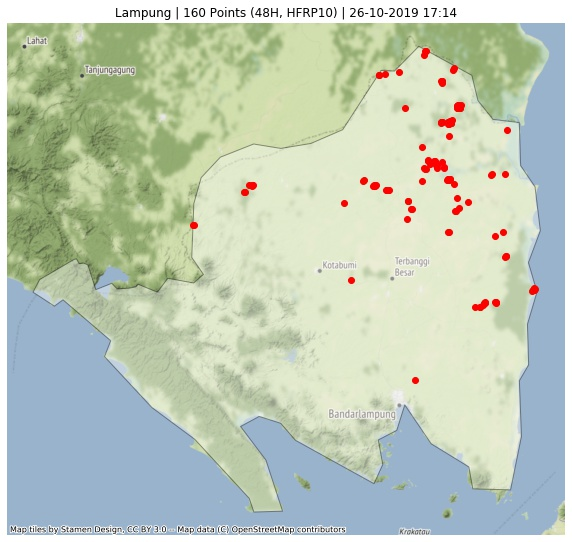

Last updated: 26-10-2019 17:14
Confidence High | FRP > 10
Tiga Provinsi Titik Api Terbanyak
373 (24H) | 1250 (48H)
Olah Data dan Visualisasi Sebaran Titik Api di Indonesia.
Acq. Date: 25-10-2019 11:36 -- 26-10-2019 13:06 WIB (24H) | 24-10-2019 10:18 -- 26-10-2019 13:06 WIB (48H) | 19-10-2019 10:12 -- 26-10-2019 13:06 WIB (7D)
Home Top 3 GitHub Sumatera Kalimantan Sulawesi Maluku & Papua Jawa Bali & NT

Data 24H

Data 48H

Data 24H

Data 48H

Data 24H

Data 48H
